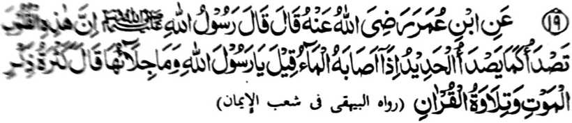
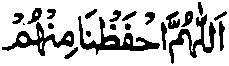
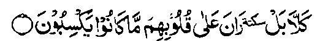

Miyakathitayan ko Ibn ‘Umar (Radhiallaho ‘Anhoma) a pitharo iyan a pitharo o Rasulollah (Sallallaho ‘Alaihi wa Sallam), “Mata-an a giyangka-iya a manga poso na pethangisen sa lagid o kapethangisa ko potao igira miyasogat a ig.” Pitharo iran, “Ya Rasulollah, antona-ai phalalas son?” Pitharo iyan, “So kapakandakela ko katatademi ko kapatay ago so kapembatiya-a ko Qur’an.”
So kitaralo o kandosa ago so kindarainonen ko taden-tadem ko Allah na gi-i thangis so poso, sa lagid den o potao a gi-i niyan kathangis misabap ko ig. So kapembatiya-a ko Qur’an ago so taden-tadem ko kapatay na mapephakatihaya niyan so poso a thatangis.
So poso na lagid o pagalongan. O di masizing, na di niyan kha-along so sagipa ko Allah. Saden sa katihaya ago kasinao niyan, na kapiya a kakhailaya niyan ko sindao. Giyoto-i sabap a saden sa kisaled tano ko nenga ago so manga rarata a ola-ola, na giyoto den-i kinitaralo o di tano kakhainengka-a ko Allah. Sabap ko kepit a kasinao o pagalongan o poso a so manga Auliya na ipapaliyogat iran ko manga morit iran ko gi-i ran kaperomasay sa kasoti ago kagenggena iran ko manga ginawa iran go so kanggalebek iran sa manga simba, go so taden-tadem ko Allah.
Miya-aloy ko saba-ad a manga Hadith a igira miyadosa so tao na katago-an sa maitem a daket so poso iyan. O thaobata niyan noto na mada-on angkoto a daket, ogaid na o baden madosa pharoman na kiyatago-an sa isa peman a daket. O giya-i den-i mikalilidon a gi-i niyan kandosa na so poso iyan na langon maka-item. Sa manaya na so poso iyan na biyokel den ko kanggalebek sa mapiya ago si-i mizoramig ko kanggalebek sa marata.

Ya Allah! na lidasen kami Ngka rekaniyan.

“...Sabenar, a kena, kami-tha-ab ko manga poso so pinggalebek iran (a dosa)?” (Surah Al-Mutaffifeen: 14)
Miya-aloy ko isa a Hadith a so Rasulollah (Sallallaho ‘Alaihi wa Sallam) na pitharo iyan, “Miyagak ako sa dowa a Pephangosiyat - so isa na gi-i makatharo na so ika dowa na di petharo. So gi-i ron makatharo na so Qur’an na so di petharo na so katatademi ko kapatay.”
Mata-an a so manga katharo o Rasulollah (Sallallaho ‘Alaihi wa Sallam) na patot so kaparatiyaya-aon. Ogaid na sobo so siran a phamamakineg phiya-piya-i maka-penggona ko manga wasiyat. O peman o aya paratiyaya tano na so Agama na da-a kipantag iyan a galebek ago pangalang ko kapaka-ozor, na di tano den magedam o ba tano kailangan sa wasiyat aya pen o ba tano nggolalanen.
So Hadrat Hasan Basri (Rahmatullahi ‘Alaihi) na pitharo iyan, “So manga tao a miyanga-oona na paparatiyaya-an niran so Qur’an na sogo-an o Allah, na pephamimikiranen niran ko mababasa gawi-i na gi-i ran inggolalan ko soled o kadaondao. Imanto na sekano na aya niyo pilalawana-an na so kakoropa ko manga batang iyan ogaid na di niyo paparatiyaya-an sa ba Sogo-an o Allah ago di niyo phamimikiranen.”